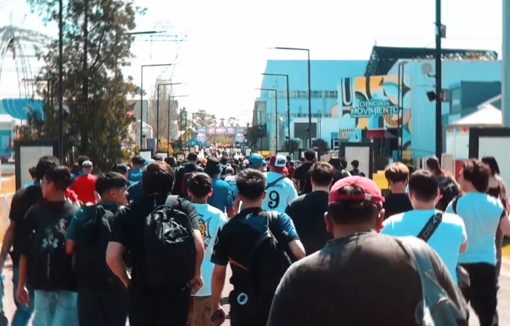
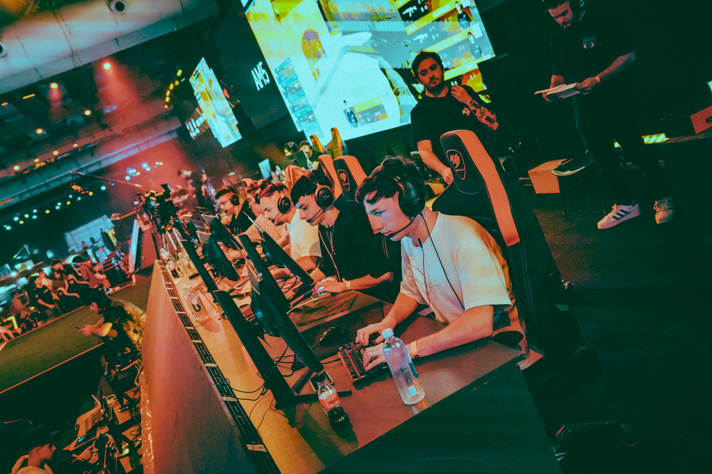
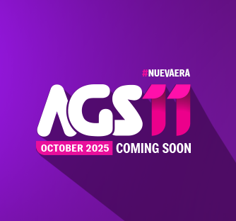

AGS 2024
Revivi la expericiencia del mejor evento de gamming de Argentina
Revivi la expericiencia del mejor evento de gamming de Argentina
Argentina Game Show (AGS) es el evento de videojuegos, deportes electrónicos (esports),
streaming y música más importante de Argentina, que reúne a la comunidad gamer, fans, creadores de contenido, organizaciones de esports y marcas influyentes.

El AGS atrae a miles de personas cada año, convirtiéndose en una celebración importante del mundo gamer en Argentina.

Además de las actividades principales, ofrece
eventos paralelos como la AGS Cup, los Premios Crack (reconocimiento a los esports), y otros eventos de networking.

AGS ha crecido significativamente a lo largo
de los años llegando a su EDICIÓN N°11 que se
realizara en Octubre del presente año, pasando de ser un evento de videojuegos a un festival de música y cultura gamer.